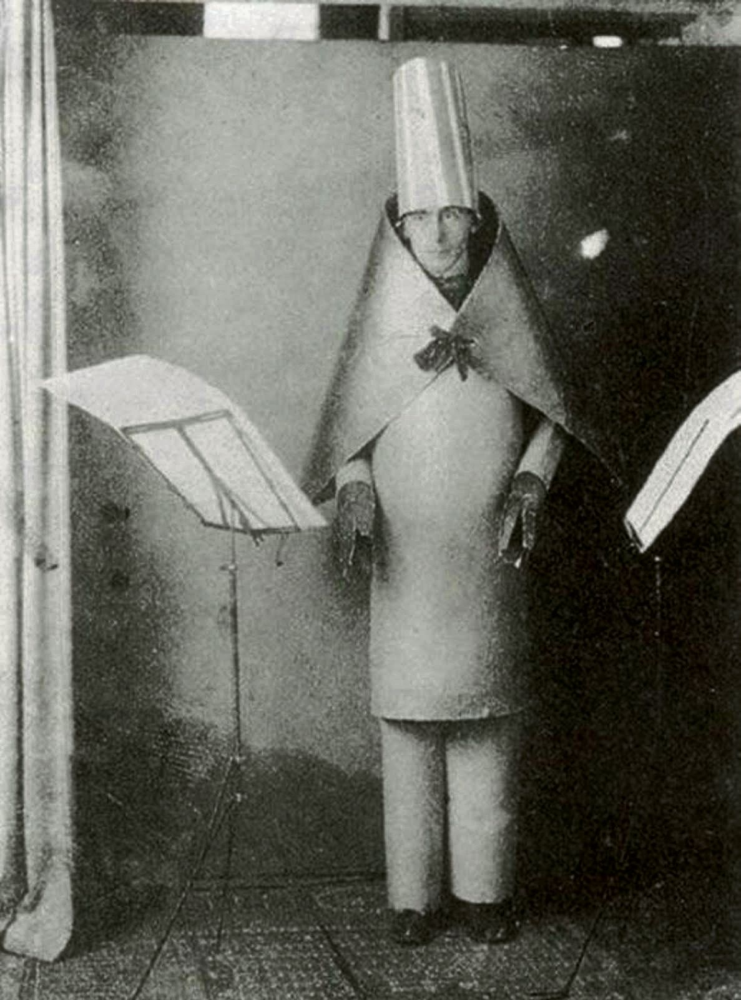

El arte que no quería ser arte
Fountain
Marcel Duchamp, 1917
Un urinario de porcelana que Duchamp compró y presentó como arte, cuestionando la autoría y la originalidad.
Bicycle Wheel
Marcel Duchamp, 1913
Una rueda de bicicleta montada sobre un taburete. Es considerado el primer "ready-made" de Duchamp.
L.H.O.O.Q.
Marcel Duchamp, 1919
Una postal de la Mona Lisa con un bigote y una perilla dibujados, un acto de irreverencia iconoclasta.
Corte con el cuchillo de cocina Dadá
Hannah Höch, 1919
Un fotomontaje monumental que critica la cultura y política de la República de Weimar desde una perspectiva feminista.
Fotomontajes satíricos
John Heartfield
Heartfield fue un maestro del fotomontaje político, usando sus obras como un arma de propaganda antifascista.

Un poema fonético sin sentido recitado por Hugo Ball vestido con un traje cubista, explorando el sonido sobre el significado.
Collage con cuadrados...
Hans Arp, 1916
Arp dejó caer papeles de colores sobre un lienzo, fijándolos donde caían para abrazar el azar como principio creativo.
Bottle Rack
Marcel Duchamp, 1914
Un escurridor de botellas comprado en una tienda, considerado uno de los primeros "ready-mades" puros.
In Advance of the Broken Arm
Marcel Duchamp, 1915
Una pala de nieve comprada en una ferretería de Nueva York, elevada a la categoría de arte por elección del artista.

The Spirit of Our Time
Raoul Hausmann, c. 1920
Una cabeza de maniquí con objetos mecánicos adheridos, que critica la idea de que el hombre moderno ha perdido su espíritu en favor de la máquina.
Cadeau (Gift)
Man Ray, 1921
Una plancha con clavos pegados en su base, transformando un objeto doméstico en algo inútil y amenazante.
God
Elsa von Freytag-Loringhoven, 1917
Una trampa de fontanería de hierro fundido montada sobre una caja de madera, considerada una crítica a la idolatría del arte.